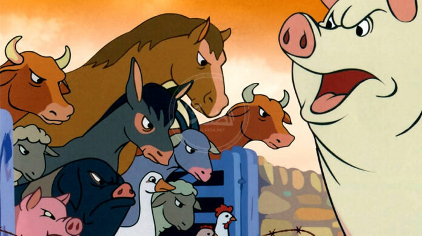

Click here to go to Animal Farm
The story is about a group of domestic animals who, in an idealistic and revolutionary act,
flee the owner of the farm (Mr. Jones) from his farm in order to take over the management
of the farm and establish "equality" and "welfare" in their community.
The movement is led by a group of pigs, but after a while this new group,
led by a pig named Napoleon, like Mr. Jones, exploits the farm animals and suppresses any opposition.
